Simulations
Run these before building. Each predicts the number the bench must reproduce, using only the pinned simulators (Qiskit Aer, Stim) and the tested functions. Each has a test.
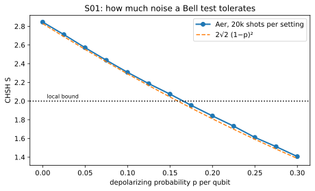

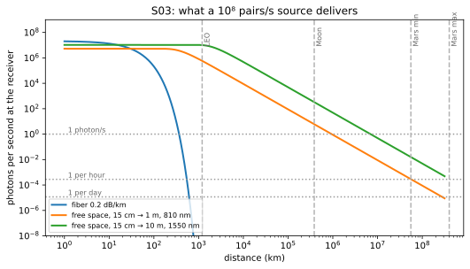
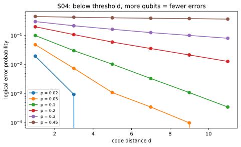
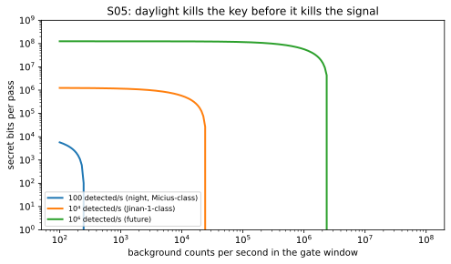
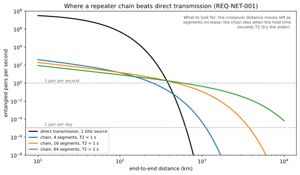
Physics says yes, with one catch: entanglement carries no message by itself, and the two classical bits every teleportation needs take 3 to 22 minutes at the speed of light. This project works out, in code that is tested against the equations, what that catch costs, what hardware could pay it, and what a student can build on the way.
Heralded entanglement and teleportation over 25 km of deployed fiber. Round trip 0.25 ms. Done in the field in 2024; our version starts on a $5k bench.
pass: herald > 1 Hz · S > 2.2 · F > 0.7 F2A single-photon downlink from low Earth orbit; loss 10⁻⁶ per pass. Micius did it in 2017, a 23 kg microsatellite in 2025; our version reproduces their budgets, then a rooftop link.
pass: budget within ±3 dB · QBER < 5% at 10° sun angle F3The same protocol with a 6–45 minute classical round trip and 10⁻⁹ loss. Done nowhere. Our version: delayed-bits bench, relay scheduling on real pass data, a messenger that fails closed.
pass: F > 2/3 after a stored 22-minute delay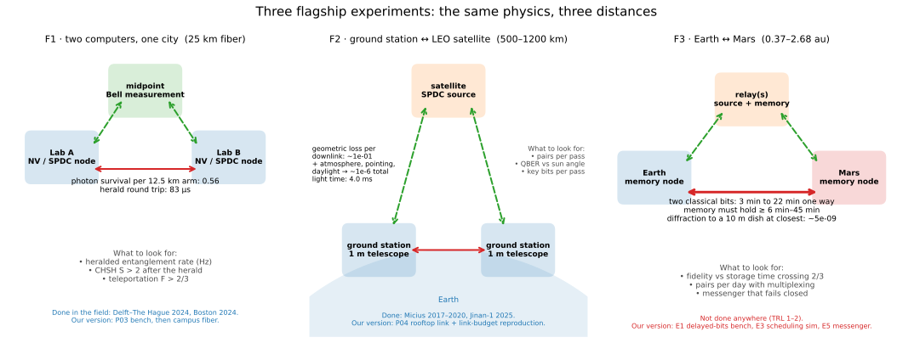
Settled physics only, every file with definitions, equations, a figure, references, the repo module, and exercises. Three paths: physics first, engineer building a qubit, the Mars-link track.
Why quantum · postulates · Bloch sphere · Rabi/Ramsey/echo · entanglement · open systems · wave mechanics · spin · identical particles · quantum optics · decoherence · math toolkit
Gates · algorithms · error correction · benchmarking · complexity · sensing · simulation · software stack
Transmon and SQUID · silicon spins · diamond NV/SiV · ions · Rydberg atoms · photons · Majorana · bosonic · control electronics · cryogenics · fabrication
QKD · teleportation · repeaters and memories · satellite and deep space · transduction · Micius budget · clocks · DSOC
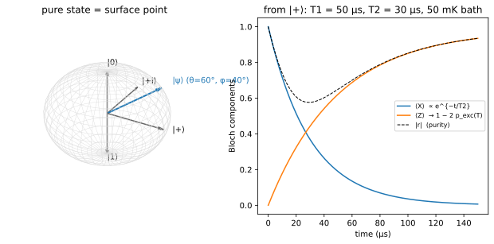
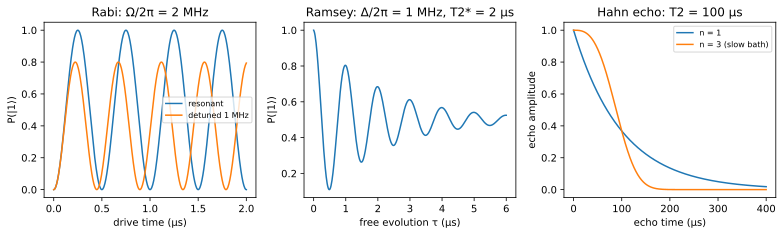
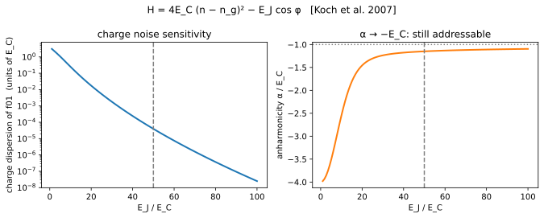
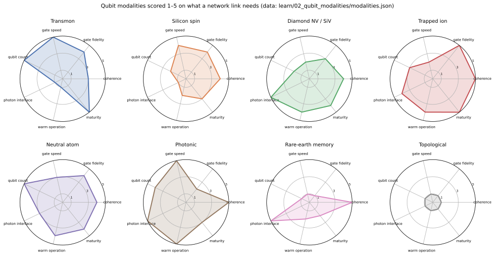
Everything with a cost, a procedure, or a proposal. Protocols you can follow line by line, landmark experiments with cheap recreations, and what nobody has run yet.
P01 ODMR on a $100 bench · P02 pulsed NV control · P03 SPDC source, HOM, CHSH, BB84 · P04 rooftop free-space link
Stern–Gerlach → single photons → Bell → ODMR → Rabi → HOM → teleportation → NV networks → satellites → below-threshold QEC
E1–E10: delayed classical channel, memory vs temperature, constellation scheduling, sun-angle background, fail-closed messaging, QRNG bases, transduction-free link, Mars memory trade, multiplexing, DI certification
Every part with a vendor link; three budget tiers from a $100 weekend to turnkey kits; how the NV and satellite experiments were actually run
Run these before building. Each predicts the number the bench must reproduce, using only the pinned simulators (Qiskit Aer, Stim) and the tested functions. Each has a test.





All six phases are implemented and tested. The requirements matrix, the thesis draft, and the generated results tables live in the repository and are regenerated from the code.
Network stack · all-photonic repeaters · GKP repeaters · device-independent QKD · entangled clocks and relativity · quantum-limited receivers · blind computing · entanglement routing · CV-QKD · certified randomness — each ending with what it would change for a Mars link
1982 → 2026, a row per milestone, and a 2026 watchlist of claims with "what it would change" and "verify by"
The design process (a systems-engineering V with decision record), the backlog by workstream, and the next hundred additions
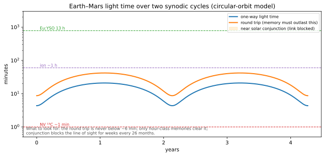
Verified links, one row per topic, each mapped to the file it accompanies: 3Blue1Brown, MinutePhysics, Veritasium, Qiskit, QuTech, Monroe, Lukin, Microsoft, Google, and hands-on builds.
281 entries in a topic-grouped index generated from the BibTeX files, each marked verified, confident, or TODO. Nothing is cited from code until it is verified.